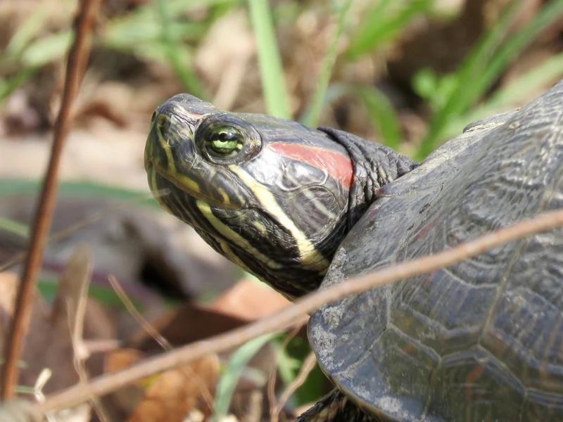

北米原産・赤い耳のような模様が特徴の水棲ガメ。日本で最も流通した時期があるため既飼育者が多いが、現在は条件付特定外来生物に指定。新規入手はできないため、既飼育個体の継続飼育者向けの情報です。

1年後の甲長は10〜14cm程度。耳のような赤いマークが鮮やかで、人慣れしやすい個体も多い。水中で活発に動き、浮島で日光浴する様子は観察していて飽きない。餌への反応がよく、飼育者を認識する個体もいる傾向がある。
10年後、オスは甲長18〜22cm、メスは25〜28cmに成長する場合がある。60〜90cm以上の大型水槽と強力なろ過が必要になる。幼体時の可愛さから購入して成長後のサイズに驚くケースが多い種。
アカミミガメは幼体時5〜6cmで販売されることが多いが、数年で20cm以上に育つことが珍しくない。大型になってからの水換え・ろ過・水槽コストの増大を事前に把握しておくと計画が立てやすい。また特定外来生物であるため、飼育を途中でやめる場合でも放流は法律で禁止されている。最後まで責任をもって飼育できるかを最初に確認することが大切。
⚠ 初心者が最初に失敗しやすいのはUVBと水質管理です。フィルターと水換えサイクルを後回しにすると、水が濁ってから慌てて買い足すことになりがちです。
ミシシッピ川流域から北米中部・東部にかけて広く分布。湖沼・池・川の浅瀬に生息し、日光浴を好む活発な水棲ガメです。日本では1970〜2000年代にペット輸入が盛んでしたが、野外への放流・定着が問題となり2023年に条件付特定外来生物に指定されました。
成体は大量の排泄物を出すため、外部フィルターの使用と週1回以上の部分換水が推奨されます。
← 横にスクロールできます
| 種名 | 甲長 | 難易度 | 必要水槽 | 特徴 |
|---|---|---|---|---|
| ミシシッピアカミミガメ このページ | 20〜30cm | 入門 | 90cm〜 | 本種（既飼育者向け） |
| カンバーランドスライダー | 18〜28cm | 入門 | 60cm〜 | 新規入手可 |
| キバラガメ | 17〜27cm | 入門 | 60cm〜 | 新規入手可 |
| ペインテッドタートル | 13〜25cm | 入門 | 60cm〜 | コンパクト |
機材を揃える前に適性診断で確認。100種対応のツールで、あなたの生活環境に合う種も確認できます。